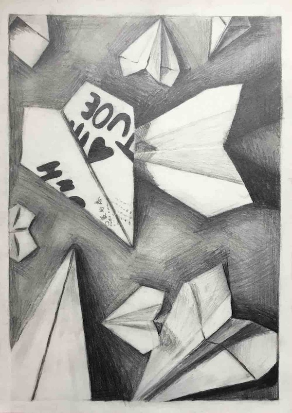
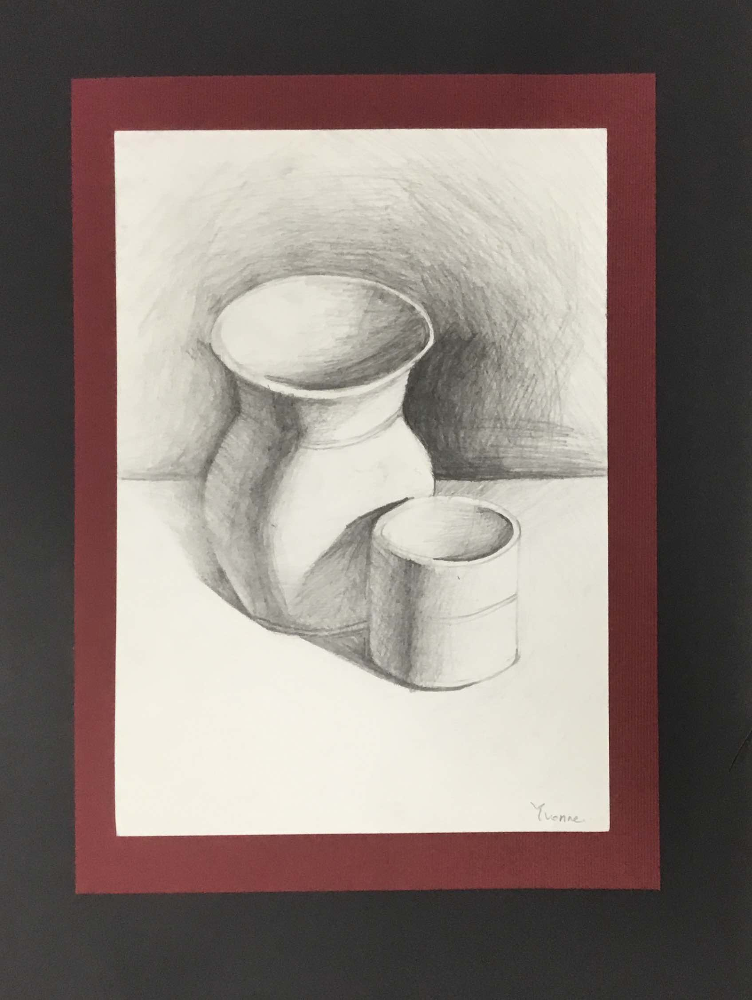
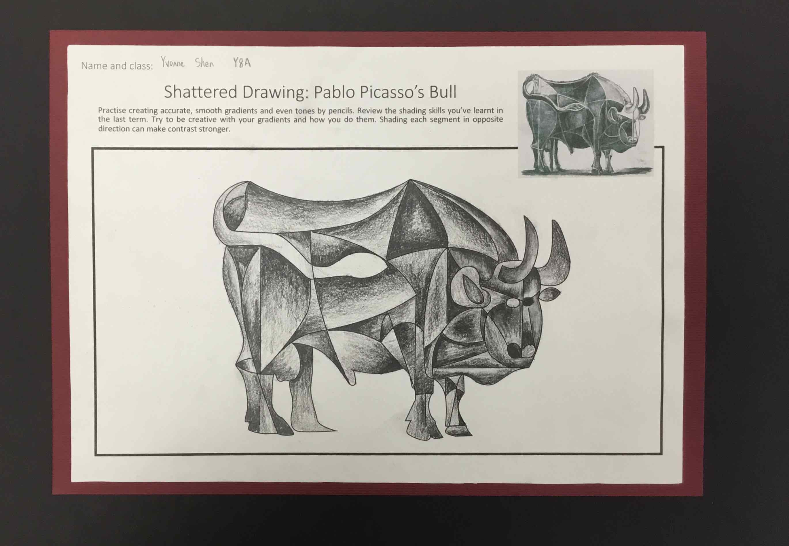
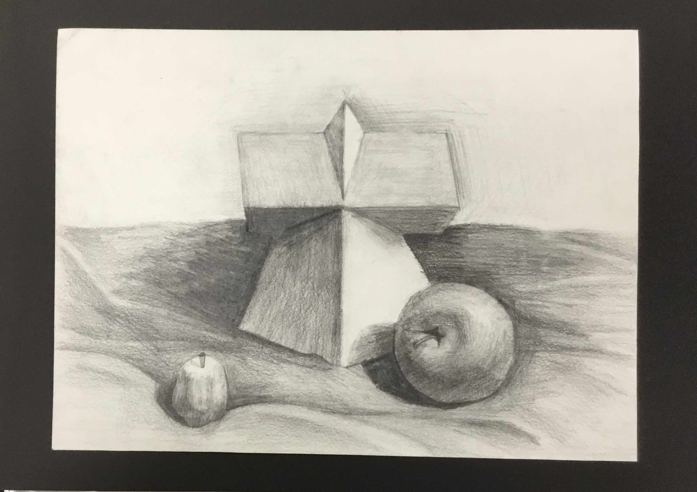
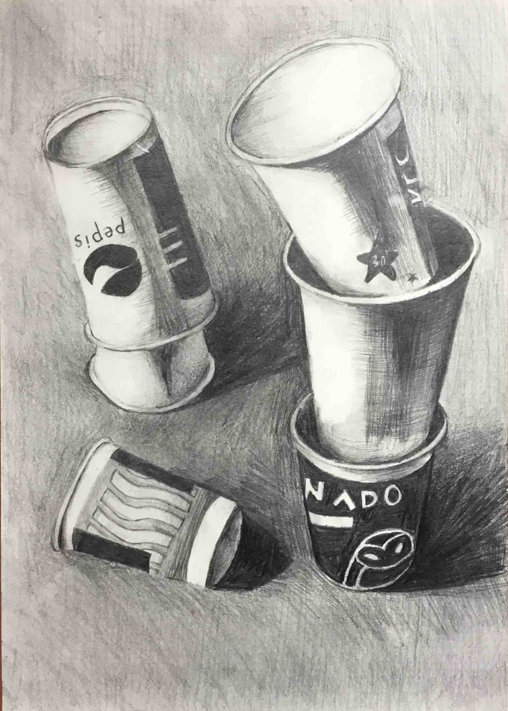
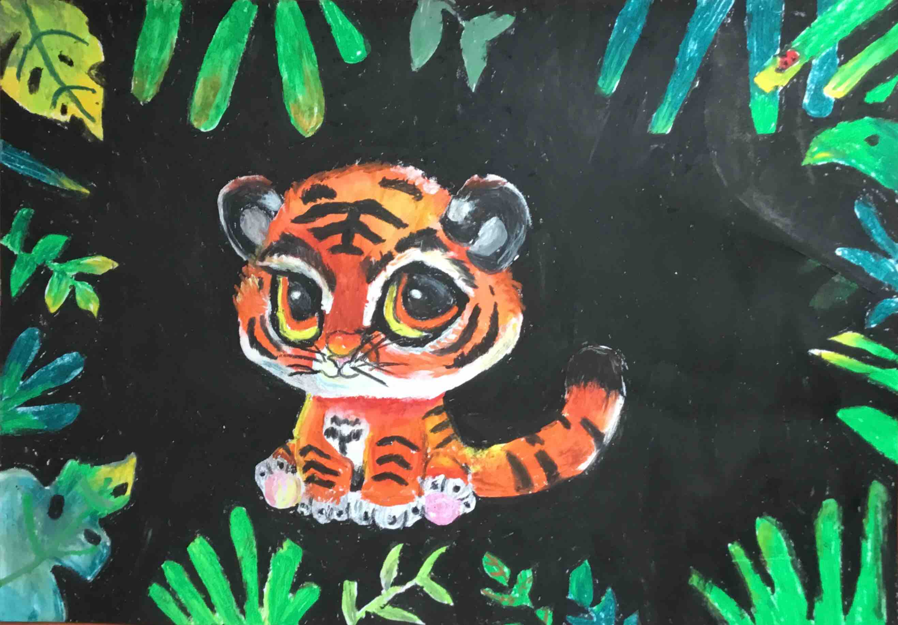
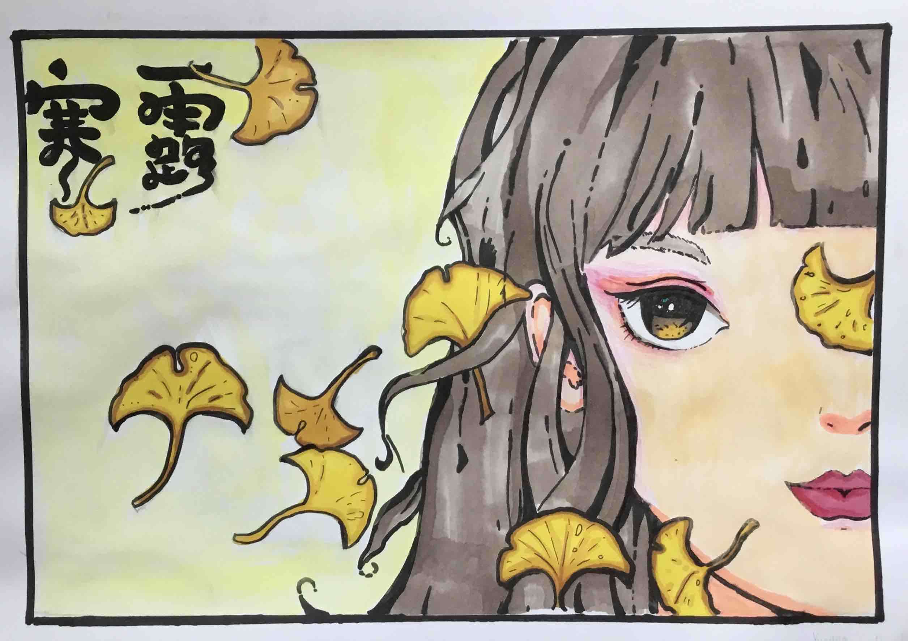
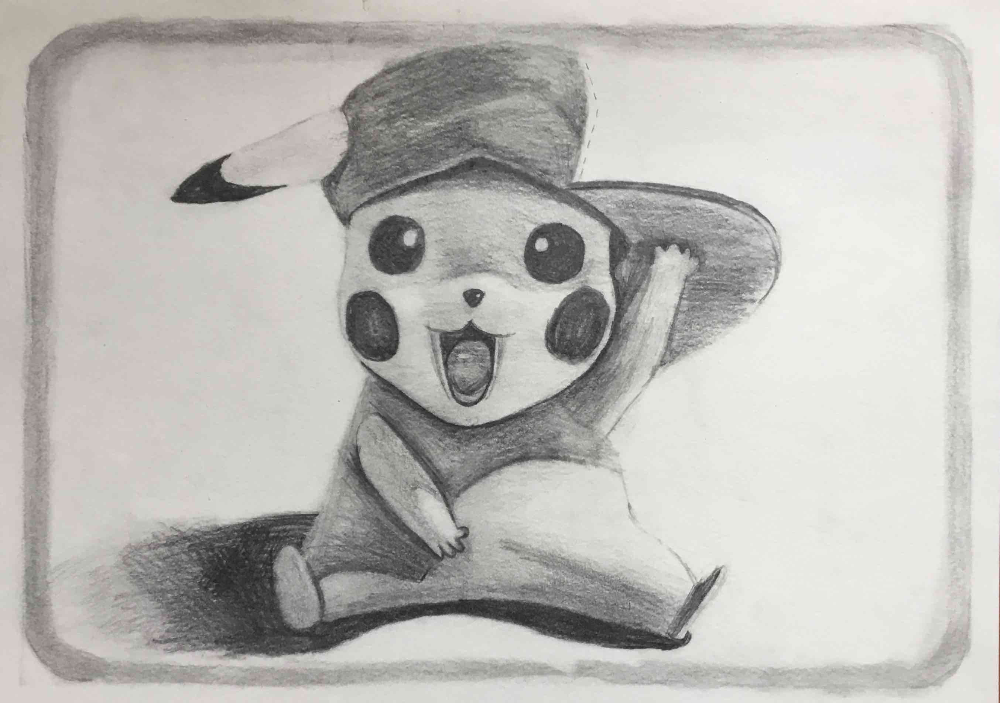
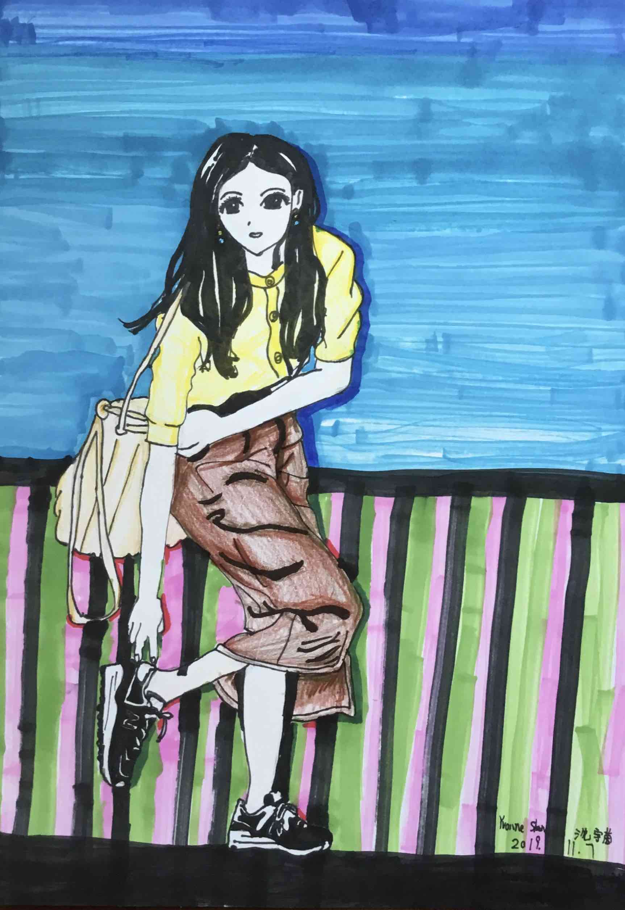

My ARTS in your face
Sketching.





About ME.
About me
My name is YVONNE, 12 years old now. I have been learning art for 8 yesrs. I like drawing color pencils the most, but everything is great for me. Now, I am focusing on sketching. And in skecthing , drawing charaters is my favorite. It makes me relax during drawing.
Different tpyes on Drawings
There's a lot of types of art tools! Every tpye looks different when it's fineshed. Let's have a look!
Here are some example's of different art tools drawing...

Tiger in the forest
crayon
A tiger in the forest looking at you!

Girl
markers
A little girl surounded by leafs.

Pikachu
pencil
Look!It's waving at you!

The lady
markers
The lady is wearing on her shoes.